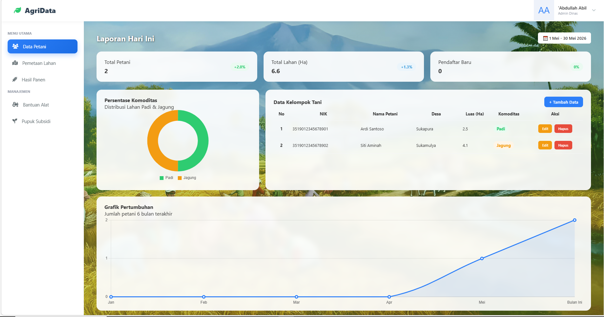

Mewujudkan Satu Data Pertanian Indonesia
Pemanfaatan teknologi dalam pengumpulan data pertanian untuk menyediakan tolak ukur statistik yang akurat dari unit administrasi terkecil.
Baca di BPS.go.id →Platform digital untuk memantau data kelompok tani, pemetaan lahan, dan penyaluran bantuan secara akurat, transparan, dan terintegrasi.

Solusi digital untuk mempermudah pengelolaan data pertanian daerah.
Pencatatan lengkap kelompok tani dan NIK yang terintegrasi secara real-time.
Memantau luas lahan dan distribusi komoditas seperti Padi dan Jagung.
Sistem pencatatan agar penyaluran bantuan alat pertanian tepat sasaran.
Monitoring alokasi dan distribusi pupuk subsidi untuk kesejahteraan petani.
AgriData hadir sebagai solusi inovatif untuk memajukan sektor pertanian lokal. Visi utama kami adalah menciptakan ekosistem terpadu yang memanfaatkan basis data untuk meningkatkan pendapatan petani, menstabilkan harga komoditas di pasaran, serta mengurangi tingkat limbah produksi pasca-panen.
Dengan memadukan teknologi informasi dan kolaborasi erat antar kelompok tani, kami percaya bahwa pengelolaan lahan dan penyaluran bantuan dapat dilakukan secara jauh lebih efisien, transparan, dan tepat sasaran.
Dukungan nyata terhadap digitalisasi dan integrasi data pertanian di Indonesia.
Pemanfaatan teknologi dalam pengumpulan data pertanian untuk menyediakan tolak ukur statistik yang akurat dari unit administrasi terkecil.
Baca di BPS.go.id →Langkah strategis pemerintah dalam menerapkan teknologi digitalisasi di sektor pertanian guna memperkuat ketahanan pangan nasional.
Baca di Pertanian.go.id →Mendorong petani menggunakan sistem digital agar dapat melakukan tindakan yang lebih tepat sasaran dalam pengelolaan lahan dan tanaman.
Baca Selengkapnya →Silakan isi form di bawah ini untuk pendataan awal.